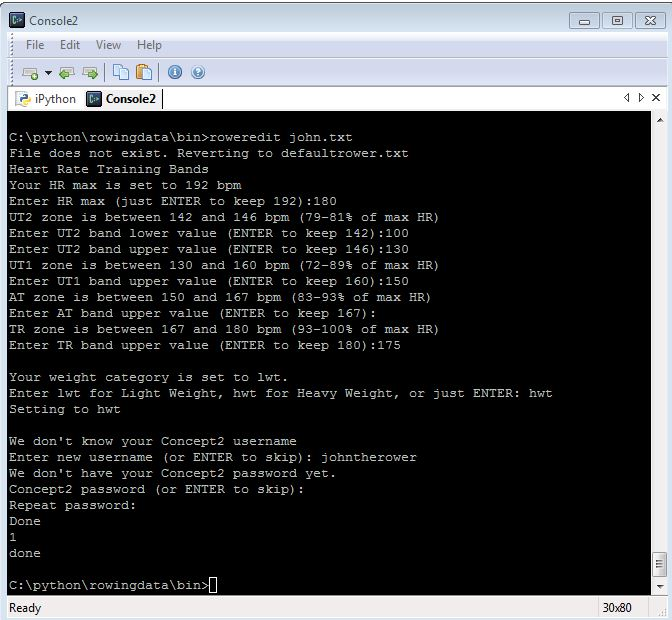
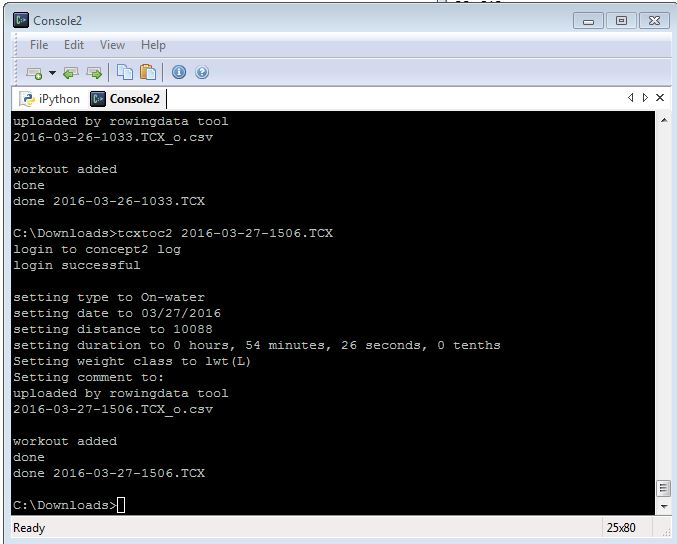
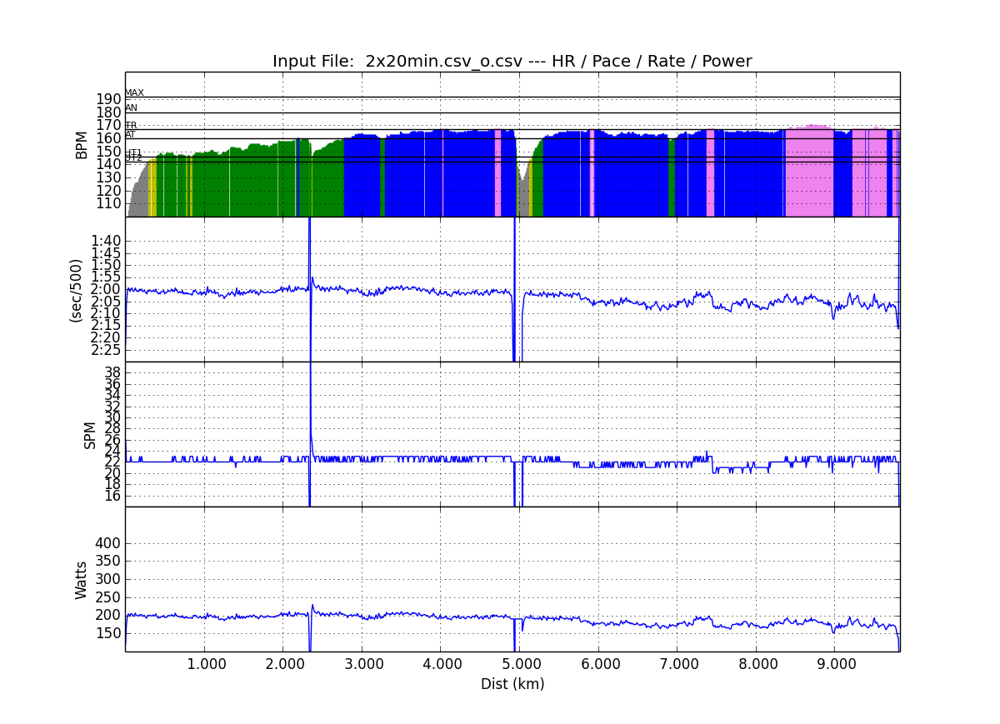

Welcome to rowingdata’s documentation!¶
Rowingdata¶
Introduction¶
This is a solution for the self-tracking rowers.
Some of us use Concept2 rowing machines. Some of us are On-The-Water rowers. All of us will use smartphone apps, smart watches, fitness (GPS) watches, etc. to track our activities.
Most of them will cross-train. Bike. Run. Skate.
That means, the Concept2 logbook is not a sufficient training logbook for us.
At the same time, the Concept2 logbook is used in rankings, for challenges, and more. Many of us will want to log all our rowing on the Concept2 logbook.
So there are a couple of challenges here:
How do I get my erg rows on Strava/SportTracks/Garmin Connect?
- Use an ANT+ device, like explained here: https://dr3do.wordpress.com/2015/07/09/hurray/
- Import from RowPro to SportTracks
- There are many smartphone apps to capture data from the PM3/4/5 erg monitor. Not many of them export in a format that is suitable for upload to the above-mentioned sites.
How do I get all my rows (including OTW) into the Concept2 logbook
- For On-Water and Erg: Add them manually
- For erg: Upload from ErgData, RowPro, Concept2 utility
This project aims at giving you ways to:
Upload fitness data captured in TCX format to the Concept2 logbook (implemented)
- This should cover all your On-Water activities, whether they are captured with a SpeedCoach, a GPS fitness watch, your phone, or any other device. As long as you are able to export a valid TCX file.
Get erg data captured with apps that have no “upload to Concept2” functionality and upload them to the Concept2 logbook (implemented)
- For example, painsled
Get erg data captured with apps that have no TCX export functionality and convert hem to TCX (implemented)
- ErgData - downloaded to CSV, converted to TCX
- RowPro data - exported to CSV, converted to TCX.
Make the data accessible in python and create useful plots. Who wants to be limited to what the on-line logbooks plot. Get your data and create:
- Color HR band charts or Pie Charts (implemented)
- Plot drive length, drive time, and other erg related parameters as a function of time or distance (implemented)
- Create histograms (Do-it-yourself).
- And much more (do-it-yourself). You’ve got the entire Python matplotlib at your disposal. Goodbye excel!
As soon as Crewnerd or Speedcoach can upload to C2 natively, or a web synchronization can be set up between the C2 logbook and popular fitness tracking sites, my project will lose much of its significance. But that’s OK.
Well, at least the colorful plots remain.
Credits¶
The project is based on python plotting code by Greg Smith (https://quantifiedrowing.wordpress.com/) and inspired by the RowPro Dan Burpee spreadsheet (http://www.sub7irc.com/RP_Split_Template.zip).

To install¶
$ easy_install rowingdata
Or
$ pip install rowingdata
To upgrade:
$ pip install --upgrade rowingdata
or
$ easy_install --upgrade rowingdata
Numpy, SciPy and matplotlib are needed. On Linux systems, they should be installed automatically through the dependencies.
On Windows, there may be installation issues.
A workaround is to install Anaconda, as described here: https://www.scipy.org/install.html
Another option is to use official 32-bit installers:
- http://sourceforge.net/projects/numpy/files/
- http://sourceforge.net/projects/scipy/files/
- http://sourceforge.net/projects/matplotlib/files/matplotlib/
Or you can fetch the unofficial but recommended Windows releases from
- http://www.lfd.uci.edu/~gohlke/pythonlibs/ (get the MKL builds for NumPy)
Command Line Tools¶
Beta. Use with caution.
The easiest way to use rowingdata is from the command line.
First, create a rower data file (if you don’t have one yet). Just run the following command and answer a few questions about yourself. If you don’t know what heart rate bands are, check here http://www.freespiritsrowing.com/content/utilities/hr-bands/ :
$ roweredit yourfilename.txt
You can omit the file name. This will create a file defaultrower.txt. You can always run the same command to change parameters (for example if you lost or gained weight, change the user name or password, etc.
Now you need the data files for your row. (The install comes with a few test files.) Get a TCX file (and a CSV summary file) from CrewNerd. TCX files from other tools should also work (not tested), as long as the TCX is valid.
Or get a CSV export from painsled.
TCX files¶
Generic TCX¶
If you have a generic TCX file (from a SpeedCoach, from a Garmin), the following will create plots and spit out some summary text
$ tcxplot tcxfile.tcx yourrower.txt
If you prefer a time based plot:
$ tcxplottime tcxfile.tcx yourrower.txt
Some TCX files do not have GPS position data. For example SpeedCoach with impeller. In that case:
$ tcxplot_nogeo tcxfile.tcx yourrower.txt
$ tcxplottime_nogeo tcxfile.tcx yourrower.txt
The following will upload your row to the Concept2 logbook, and create a file crewnerddata.tcx_o.csv that looks like a painsled csv, for future use
$ tcxtoc2 tcxfile.tcx yourrower.txt
Again, yourrower.txt is optional.
Here is the row on the Concept2 logbook:

CrewNerd with summary¶
Having a crewnerddata.csv (summary csv) and a crewnerddata.tcx, the following will create plots and spit out some summary text
$ crewnerdplot crewnerddata yourrower.txt
The yourrower.txt argument is the file where you keep your rower data. This is optional. If you don’t provide it, the tool will look for defaultrower.txt. If it doesn’t find that, it will use some default values.
The script will also spit out some statistics from the summary csv.

If you prefer a time based plot:
$ crewnerdplottime crewnerddata yourrower.txt
Painsled¶
Having painsled data in testdata.csv, the following will create plots and spit out some summary text
$ painsledplot testdata.csv yourrower.txt
or
$ painsledplottime testdata.csv yourrower.txt
The yourrower.txt argument is the file where you keep your rower data. This is optional. If you don’t provide it, the tool will look for defaultrower.txt. If it doesn’t find that, it will use some default values.
The following will upload your row to the Concept2 logbook:
$ painsledtoc2 testdata.csv yourrower.txt
Again, yourrower.txt is optional.

Here is the row on the Concept2 logbook

SpeedCoach GPS¶
Having SpeedCoach GPS data in testdata.csv, the following will create plots and spit out some summary text
$ speedcoachplot testdata.csv yourrower.txt
or
$ speedcoachplottime testdata.csv yourrower.txt
The yourrower.txt argument is the file where you keep your rower data. This is optional. If you don’t provide it, the tool will look for defaultrower.txt. If it doesn’t find that, it will use some default values.
The following will upload your row to the Concept2 logbook:
$ speedcoachtoc2 testdata.csv yourrower.txt '2015-11-05T13:15:30-05:00'
Again, yourrower.txt and date string are optional. Because the SpeedCoach CSV file content doesn’t have the row date, you may provide a date string. The tool should be quite forgiving regarding the exact format in which you write your date/time string. However, if you input something ambiguous (time zone), the tool will guess and your row may end up on the wrong date. If nothing is provided, today’s date will be taken.
RowPro¶
Having RowPro exported data in testdata.csv, the following will create plots and spit out some summary text
$ rowproplot testdata.csv yourrower.txt
or
$ rowproplottime testdata.csv yourrower.txt
The yourrower.txt argument is the file where you keep your rower data. This is optional. If you don’t provide it, the tool will look for defaultrower.txt. If it doesn’t find that, it will use some default values.
For RowPro CSV files, upload to C2 logbook is not available on the command line. You can upload to C2 directly from the RowPro application.
ErgData¶
If you use ErgData, you can download a CSV file from your Concept2 log. Here is how you use those data in this tool:
$ ergdataplot testdata.csv yourrower.txt
or
$ ergdataplottime testdata.csv yourrower.txt
The yourrower.txt argument is the file where you keep your rower data. This is optional. If you don’t provide it, the tool will look for defaultrower.txt. If it doesn’t find that, it will use some default values.
As your data are already on the Concept2 logbook, it doesn’t make sense to have a script to upload them once more.
However, you may appreciate creating a TCX file for uploading to SportTracks.mobi or Strava:
$ ergdatatotcx testdata.csv
This will create a file testdata.csv_o.tcx which you can upload. I have tested this file on Strava and SportTracks with success. Somehow, even though the resulting file validates against the TCX Schema, I wasn’t able to upload the file to Garmin Connect, because Garmin Connect rejects TCX files from non-Garmin devices.
ErgStick¶
If you use ErgStick, you can download a CSV file from your Concept2 log. Here is how you use those data in this tool:
$ ergstickplot testdata.csv yourrower.txt
or
$ ergstickplottime testdata.csv yourrower.txt
The yourrower.txt argument is the file where you keep your rower data. This is optional. If you don’t provide it, the tool will look for defaultrower.txt. If it doesn’t find that, it will use some default values.
As your data are already on the Concept2 logbook, it doesn’t make sense to have a script to upload them once more.
However, you may appreciate creating a TCX file for uploading to SportTracks.mobi or Strava:
$ ergsticktotcx testdata.csv
This will create a file testdata.csv_o.tcx which you can upload. I have tested this file on Strava and SportTracks with success. Somehow, even though the resulting file validates against the TCX Schema, I wasn’t able to upload the file to Garmin Connect.
Copying to clipboard¶
From the command-line, this only works on windows:
$ copystats testdata.csv yourrower.txt
Directly in Python¶
Beta. Use with caution.
Your personal data¶
The old and difficult way¶
If you’re not me (or have identical heart rate thresholds), you will have to change the default values for the rower. For example:
>>> john = rowingdata.rower(hrut2=100,hrut1=120,hrat=140,hrtr=150,hran=170,hrmax=180,c2username="johntherower",c2password="caughtacrab")
You can store this locally like this
>>> john.write("johnsdata.txt")
Then you can load this like this
>>> john = rowingdata.read_obj("johnsdata.txt")
The new and easy way¶
Since version 0.65 there are easier ways.
Create a new rower through some interactive Q&A:
>>> rowingdata.roweredit("johnsdata.txt")
If you omit the file name, it will default to “defaultrower.txt”
>>> john = rowingdata.getrower("johnsdata.txt")
If you want to change John’s data, again just type:
>>> rowingdata.roweredit("johnsdata.txt")
Painsled iOS¶
To use with Painsled iOS CSV data, simply do
>>> row = rowingdata.rowingdata(csvfile="testdata.csv",rower=myrower)
>>> row.plotmeters_erg()
>>> print row.allstats()
RowPro¶
To use with RowPro CSV data, simply do
>>> rp = rowingdata.RowProParser(csvfile="RP_testdata.csv")
>>> row = rowingdata.rowingdata(df=rp.df)
>>> row.plotmeters_erg()
>>> row.plottime_erg()
>>> print row.summary()
The rp object has a dataframe “df” that you can pass to rowingdata.rowingdata using the df keyword. Thus, you avoid storing intermediate results.
Alternatively, you can use:
>>> rp = rowingdata.RowProParser(csvfile="RP_testdata.csv")
>>> rp.write_csv("example_data.csv")
>>> row = rowingdata.rowingdata(csvfile="example_data.csv")
>>> row.plotmeters_erg()
>>> row.plottime_erg()
>>> print row.summary()
SpeedCoach¶
To use with SpeedCoach CSV data, simply do
>>> sc = rowingdata.speedcoachParser(csvfile="RP_testdata.csv")
>>> row = rowingdata.rowingdata(df=sc.df)
>>> row.plotmeters_erg()
>>> row.plottime_erg()
>>> print row.summary()
CrewNerd (and other TCX)¶
To use with CrewNerd TCX data, simply do
>>> tcx = rowingdata.TCXParser(csvfile="2016-03-25-0758.tcx")
>>> tcx.write_csv("example_data.csv")
>>> row = rowingdata.rowingdata(csvfile=open("example_data.csv"),rower=myrower)
>>> row.plotmeters_otw()
>>> row.plottime_otw()
>>> print row.summary()
Other useful stuff¶
To get any data column as a numpy array, use (for example for HR data - see list below for other accessible data fields).
>>> row.getvalues[' HRCur (bpm)']
Of course you have access to the entire data frame as well:
>>> df = row.df
>>> df.describe
To create the colorful plots, assuming you have a summary file from CrewNerd called 2016-03-25-0758.CSV and a TCX file called 2016-03-25-0758.TCX
>>> rowingdata.dorowall("2016-03-25-0758")
Plots and statistics
>>> row.uploadtoc2()
This will upload your row to Concept2 logbook. It just simply fill the online form for you. So nothing more than total distance and duration, date, weight category and row type.
Export or re-export to a tcx file is done with
>>> row.exporttotcx("test.tcx")
With the package at your full disposal, the sky is the limit. You can do any plot you like or do other statistics, like calculate your average stroke length including error margin, etc.
Data Fields¶
The available data fields are
- ‘Timestamp (sec)’
- ‘ Horizontal (meters)’
- ‘ Cadence (stokes/min’
- ‘ HRCur (bpm)’
- ‘ Stroke500mPace (sec/500m)’
- ‘ Power (watts)’
- ‘ DriveLength (meters)’
- ‘ StrokeDistance (meters)’
- ‘ DriveTime (ms)’
- ‘ StrokeRecoveryTime (ms)’
- ‘ AverageDriveForce (lbs)’
- ‘ PeakDriveForce (lbs)’
- ‘cum_dist’
If imported from TCX, Rowpro, or other tools, some data fields may not contain useful information.
CSV File Standard¶
The basic rowingdata class reads CSV files that adher to the standard described here. Any parser implementation should adher to the minimum standard as described here.
Please send to me any CSV file that adhers to the standard described here but does not parse well in the “rowingdata” module. I will update the module and add the file to standard testing.
Field Names (Columns)¶
The standard field names are:
- ‘Timestamp (sec)’
- ‘ Horizontal (meters)’
- ‘ Cadence (stokes/min’
- ‘ HRCur (bpm)’
- ‘ Stroke500mPace (sec/500m)’
- ‘ Power (watts)’
- ‘ DriveLength (meters)’
- ‘ StrokeDistance (meters)’
- ‘ DriveTime (ms)’
- ‘ StrokeRecoveryTime (ms)’
- ‘ AverageDriveForce (lbs)’
- ‘ PeakDriveForce (lbs)’
- ‘ lapIdx’
- ‘ ElapsedTime (sec)’
The CSV file adhers to the US conventions, with fields separated by a comma (‘,’) and using the dot ‘.’ as the decimal symbol.
The field names are on the first line. There are no header or footer lines in the CSV file, to simplify data ingestion.
The field names must match exactly, including use of capitals and leading spaces. Please note the space at the beginning of some of the field names. If one of the “standard” field names is missing, the parser shall create it and set the values for this field to 0 (zero), except for the ‘TimeStamp (sec)’ field which is mandatory.
The parser shall not depend on the order of the field names (columns). The parser may reorder columns as well as rows, for example reordering by the time stamp.
Data Fields (Rows)¶
It is recommended that there is one data record per one rowing stroke.
Sometimes this is difficult to implement. In that case, the following formats are happily parsed as well:
- One record per N meters traveled
- One record per N seconds
For calculating statistics, it is important to be consistent. Rowers may use different devices to capture data in different situations. Inconsistencies between the devices may lead to inconsistencies in aggregrate data, such as (for example) an app that calculates the number of strokes taken during a season. As a “stroke” is a unit that is natural for rowers, we recommend to have one data field per stroke.
Unless otherwise stated below, all numerical types shall be parsed by the parser, so it is up to the user to implement single, double, decimal or integer, and common (en-US) numerical notation shall be parsed well, e.g.
- 234 (integer)
- 22.1 (float)
- 6.3e4 (scientific)
Percentages are not guaranteed to be parsed well. Use fractions, e.g.:
- 0.67 (good)
- 67% (not good)
Missing Data¶
If a measuring device does not obtain a value during a stroke, this shall be indicated in the file. Avoid using dummy values. It will be up to the parser and further data processing to “clean” the data.
Recommended values are ‘nan’ (not a number), or leaving the field empty.
Please not that ‘nan’ replacing a missing time stamp may lead to unpredictable results.
TimeStamp (sec)¶
Field name: ‘TimeStamp (sec)’ (no leading space).
Unit: seconds
This shall be a Unix time stamp (seconds since January 1, 1970, midnight UTC/GMT) in the UTC time zone.
For human readability, it is advised to add a ISO8601 formatted time stamp as a separate column called ‘ ISO8601’.
The value reported shall be the time at the end of the stroke cycle (i.e. the start of the next stroke), or at the crossing of the finish line (or lap end distance), whichever is first. If this is not adhered to, lap times may be inaccurate.
The precision may be up to microseconds, but as a minimum the parser shall take into account tenths of seconds.
It is strongly advised to have no “missing data” in the time stamp field.
Distance (m)¶
Field name: ‘ Horizontal (meters)’
Unit: meters
This is the distance covered at the end of the stroke since the beginning of the workout or lap.
For best results, it is recommended to report the cumulative distance since the beginning of the workout, but it is allowed to reset the distance at the beginning of each lap.
Cadence (SPM)¶
Field name: ‘ Cadence (stokes/min)’
Unit: strokes/min
Please note the typo in the field name. It is recommended that the parser checks for “strokes” if “stokes” is not found, but this is not guaranteed.
Pace¶
Field name: ‘ Stroke500mPace (sec/500m)’
Unit: seconds
Pace in seconds per 500m. Avoid negative values.
When the rower stops, this value goes to infinity. Use empty field, ‘nan’, ‘inf’ or equivalent. Avoid inserting 0, because this will mess up speed calculations.
If this field is missing, there must be a possibility to calculate it from distance and time fields. If distance and pace fields are missing, the parser may throw an error.
Power (watts)¶
Field name: ‘ Power (watts)’
Unit: Watt
Power in watts. For erg it should be the power reported by the monitor. For OTW rowing, it is recommended that this is the total mechanical power exerted by the rower, i.e. power used for propulsion, plus waste (puddles, drag), as opposed to the metabolistic power.
Drive Length¶
Field name: ‘ DriveLength (meters)’
Unit: meter
The distance traveled by the handle along the longitudal axis of the boat or erg.
For OTW rowing, where the oar or scull rotates around the pin, this is not equal to the length trajectory traveled by the hands. It is the projection of that trajectory on the longitudal axis.
Stroke Distance¶
Field name: ‘ StrokeDistance (meters)’
Unit: meter
The distance traveled during the stroke cycle.
Drive Time¶
Field name: ‘ DriveTime (ms)’
Unit: ms
The duration of the drive part (from catch to finish) of the stroke. For OTW rowing it is recommended to measure this as the time it takes from the minimum (catch) oar angle to the maximum (finish) or angle, as opposed to “blade in” to “blade out” times.
Recovery Time¶
Field name: ‘ StrokeRecoveryTime (ms)’
Unit: ms
The duration of the recovery part. See Drive Time for the definition. Drive Time plus Recovery Time should equal the duration of the entire stroke cycle.
Average Drive Force¶
Field name: ‘ AverageDriveForce (lbs)’ / ‘ AverageDriveForce (N)’
Unit: lbs - or N, see below
Currently implemented is only the field name and value in lbs. In the future, we will implement ‘ AverageDriveForce (N)’ so we can report in SI units.
This should be the part of the handle force that does actual work.
For dynamic ergs and OTW rowing this is not sufficient to describe the complete stroke dynamics, so additional fields can be defined, for example ‘ StretcherForce’.
For OTW rowing there are various measurement systems. Some measure at or near the handle. Some measure at the pin.
I recommend to either
- Recalculate to handle force if possible, adding a separate field with the real measured value and a descriptive field name
- Report the real measured value in this field as well as in a separate field with a descriptive field name
The average should be an average over the working distance of the force, as opposed to an average over time or oar angles.
Peak Drive Force¶
Field name: ‘ PeakDriveForce (lbs)’ or ‘ PeakDriveForce (N)’
Unit: lbs (currently) or N (supported in the future)
See discusison about measuring forces under Average Drive Force.
Lap Identifier¶
Field name: ‘ lapIdx’
Unit: N/A
A unique identifier identifying the lap. It is recommended to use integer numbers, starting at 0, and increasing in time, but the following should also parse well:
- ‘aap’, ‘noot’, ‘mies’, ‘jet’
- ‘a’, ‘b’, ‘c’
- ‘first’, ‘second’, ‘third’
- ‘clubtobridge’, ‘straightkm’, etc ..
As long as each identifier is unique.
Elapsed Time¶
Field name: ‘ ElapsedTime (sec)’
Unit: Seconds
Elapsed time since start of workout (or interval). The value may reset at the start of a new lap. In that case, it should be consistent with the lap identifier.
Measured at the end of the stroke cycle or when crossing the finish or lap line, whatever comes first. The first reported time in a new lap or workout should be at the end of the first stroke cycle.
Seconds in decimal notation. So ‘32425.2’ is good. Other time notations, e.g. ‘34:45.2’ may not be parsed.
Workout State¶
Field name: ‘ WorkoutState’
A number indicating the workout state, following the Concept2 erg convention:
- Work strokes: 1, 4, 5, 6, 7, 8, 9
- Rest strokes: 3
- Transitions: 0,2,10,11,12,13
The transitions (“waiting for interval start”) are not supported, so a parser may simply consider all strokes with a workout state that is not equal to 3 as work strokes.
It is not mandatory to record rest (paddle) strokes, but it is recommended.
If this field is not present, the parser shall assume that all strokes are work strokes.
Coordinates¶
Field names: ‘ latitude’, ‘ longitude’
Units: degrees, in decimal notation
For example:
- 52.059876, 5.111655 (good)
- 52 03‘35.5”N, 5 06‘42.0”E (bad)
Wind speed and direction¶
Field names: ‘vwind’ and ‘winddirection’
Units: m/s and degrees (0 = North, 90 = East)
Release Notes:¶
0.94.x¶
- Recognizes C2 logbook summary CSV (which is not supported)
- Added RowPerfect3 Parser
0.93.x¶
- Added support for Empower Oarlock parameters from the CSV file export from SpeedCoach GPS 2 with Data Pack (LiNK v1.27 and higher)
- Enabled gzip (through gzip=True in write_csv)
- Revamped CSV parsers.
0.92.x¶
- Added Power Zones
- Improved Pie Charts
- Added drag info to some charts
- Bug fix in summary statistics
- Updated ErgDataParser because ErgData corrected a typo in their column header
- Added power info to summary and interval summaries
- Added BoatCoachParser
0.90.x¶
- Improved handling of RowPro files. Taking the split/interval info from the footer and putting it in the resulting data frame.
- Added functionality to update the intervals/splits
- Some fiddling with the interval statistics calculations
0.89.x¶
- Some internal optimizations to reduce memory consumption
- A simple EU format “1.000,0” instead of “1 000.0” recognition added to RowProParser
- Added a MysteryParser for a CSV file type that is clearly rowing data, but I don’t know the origin
0.86.x¶
- Added support for SpeedCoach GPS 2 CSV file
- Added support for FIT files
- Improved the CrewNerd summary (now calculates time weighted averages)
0.85.x¶
- Changes to support rowsandall.com rowing physics calculations
- TCX Export now adds Power if power calculations have been done
0.84.x¶
- Added support for wind and stream updates on rowsandall.com
- Other changes to support rowsandall.com rowing physics calculations
0.81.x¶
- added some plotting for rowsandall.com
- a workaround for the ugly HR plateaux in plots from CrewNerd
0.80.x¶
- fixed bug in summary strings for CrewNerd plots
- fixed bug in parser of ErgData files. Interval workouts should now work well.
0.79.x¶
- rowingdata now uses a file object instead of a file name. Command-line tools updated.
- added code to get image objects (for use on web app)
- changing RowPro to cumulativetime
0.78.x¶
- Added some experimental code for doing wind corrected pace
- Improved TCX processing (to minimize impact of some CrewNerd glitches)
0.77.x¶
- Added ErgStickParser
- Added write_csv(writeFile) to rowingdata class
0.76.x¶
- Added export to TCX file
- Corrected some bugs in dynamic y axis algo
- Corrected bug in Meter based OTW rowing plots (missing AN HR data in bar chart)
- Correct bug in CrewNerd summary stats algorithm.
- Pie chart improved: Now matches the HR bar plot (difference between < and <=)
- Pie chart - strange values. Corrected.
0.75.x¶
- Added plotting for ErgData CSV files (exported from Concept2 log)
- Improved the colorful HR bar charts (with width parameter)
- Made y axis ranges dynamic (except for stroke rate plots)
- Replaced moving average with Exponentially Weighted Moving Average. Sounds more scientific. Doesn’t make a big difference in the data.
- In TCXParser, moved some of the heavy data lifting to __init__ (from write_csv)
0.74.x¶
- Added command-line scripts to plot data from RowPro
- Added Pie Chart as extra plot to time based plot
0.73.x¶
- Added parser for speedcoach CSV files
- Fixed bugs in RowProParser
0.72.x¶
- added command line tools for generic TCX files (should work with RIM)
0.71.x¶
- painsledDesktopParser now removes the “00 waiting to row”: Statistics for Painsled Desktop work
- Command line scripts should now install well
- Moved test data to testdata folder
- replaced * operator for the bool dtype with &
- tested on Linux (Ubuntu), Mac OS X (thx Greg), Windows 7 & Windows 10
- fixed bug related to clipboard copying on Mac and Linux. I have temporarily disabled clipboard copying of summary strings for all platforms except windows.
- using elapsed time where possible instead of time stamps
0.65¶
- Expanded command line scripts with time plots
- Command line scripts now take a rower file as an optional second argument
- Command line script to change rower parameters easily
0.63¶
- Fixed a bug that caused unwanted forgetting of Concept2 username and password
0.62¶
- Fixed the time plot bug which also led to errors in the Concept2 upload (needed to sort the painsled data by time)
0.6¶
- Added command-line tools and some test data
0.52¶
- Adding weight and row type to Concept2 upload
- Adding options to locally save concept2 username and password
- Added row type (e.g. “Indoor Rower” or “On-water”) to rowingdata
0.51¶
- Corrected some dependencies errors
0.5¶
- Upload to Concept2 logbook is working!
0.45¶
- Added saving and loading of rower data (so you can store your password and HR data)
0.43¶
- Attempting to remove the dubious DataFrame copy errors using df.loc
0.42¶
- Added RowPro CSV Parser
- Added summary statistics and interval statistics (also copies the output to clipboard)
- Interval statistics now (sort of) works for Desktop Painsled data
Known bugs¶
- Copy to clipboard doesn’t work from command-line on Linux, OS X
- The summary statistics don’t work well when you use the TCX from Rowing in Motion (RIM).
- RowProParser doesn’t read the header information. Total row time reported by the tool is shorter by about half a stroke. Also there are a few meters missing. As RowPro has its own upload to C2 log, I didn’t fix this bug. I guess RowPro users would use the tool mainly for plotting.
- The TCX created from the CSV doesn’t work upload to Garmin Connect. This is not a bug. It’s Garmin’s policy to not accept TCX from non-Garmin devices.
Future functionality¶
Add support for other erg software tools (just need the csv/tcx and it will be easy)
- Done for generic TCX
- Done for CSV from SpeedCoach
- Done for RowPro
- Done for ErgData
- Done for ErgStick
Come up with a way to add Watts to the rowing plots - Done in EXPERIMENTAL mode
Use the C2 logbook API and add splits and other data to the workout on the Concept2 logbook
Contents: